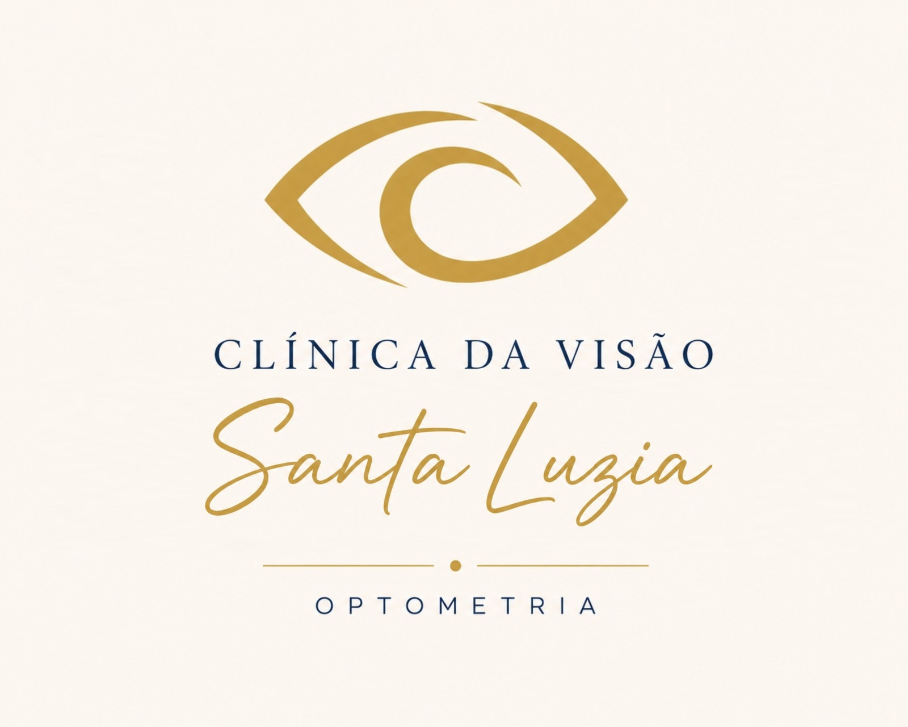

<!DOCTYPE html>
<html lang="pt-BR">
<head>
<meta charset="UTF-8">
<meta name="viewport" content="width=device-width, initial-scale=1.0">
<title>Acuidade Visual — teste no PC</title>
<style>
  * { box-sizing: border-box; margin: 0; padding: 0; }
  html, body { width:100%; height:100%; overflow:hidden; background:#0E2036;
    font-family:"Segoe UI", Roboto, Arial, sans-serif; -webkit-font-smoothing:antialiased; }
  #root { position: fixed; inset: 0; }
  canvas { position:absolute; inset:0; display:none; }
  #ui { position:absolute; inset:0; }

  /* ---- Paleta (azul-escuro + dourado) ---- */
  :root { --navy:#0E2036; --navy2:#17324F; --gold:#C6A24C; --gold2:#E3C77E; --cream:#F3E9D6; }

  /* ---- fundo comum das telas de menu ---- */
  .screen { position:absolute; inset:0; overflow:auto; color:var(--cream);
    background:radial-gradient(120% 95% at 50% -5%, #1b3a5b 0%, #0E2036 60%); }
  .wrap { min-height:100%; display:flex; flex-direction:column; align-items:center; padding:4vh 5vw 8vh; }
  /* Vertical: centraliza quando cabe e rola quando não cabe (robusto em qualquer WebView). */
  #root.port .screen { display:flex; flex-direction:column; }
  #root.port .wrap { min-height:0; margin-top:auto; margin-bottom:auto; }
  #root.port .backhint { position:absolute; }
  .logo-badge { height:15vh; max-height:120px; border-radius:14px; background:#FBF6F0;
    padding:8px 16px; box-shadow:0 6px 22px #0007; }
  .title { font-size:clamp(22px,2.6vw,32px); font-weight:700; color:#fff; margin:14px 0 2px; letter-spacing:.4px; }
  .subtitle { font-size:15px; color:var(--gold2); margin-bottom:12px; letter-spacing:.3px; }
  .status { font-size:15px; text-align:center; margin-bottom:6px; color:#cfe0f0; }
  .status.ok { color:#8FE0A0; } .status.warn { color:var(--gold2); }
  .backhint { position:fixed; bottom:20px; left:0; right:0; text-align:center; color:#8ea6c0; font-size:14px; }

  /* ---- grade de ícones ---- */
  .grid { display:grid; gap:20px; width:100%; max-width:1120px; margin-top:10px; }
  .tile { display:flex; flex-direction:column; align-items:center; justify-content:center; gap:10px;
    padding:20px 10px; border-radius:18px; background:#ffffff0f; border:2px solid #ffffff12; }
  .tile.sel { background:linear-gradient(160deg,var(--gold2),var(--gold)); border-color:#ffffffaa;
    box-shadow:0 10px 28px #0008, 0 0 0 3px #C6A24C55; transform:translateY(-3px); }
  .tile-ic { color:var(--gold); line-height:0; }
  .tile-ic svg { width:clamp(38px,6.5vw,68px); height:clamp(38px,6.5vw,68px); display:block; }
  .tile.sel .tile-ic { color:var(--navy); }
  .tile-lb { font-size:clamp(14px,1.6vw,19px); font-weight:600; color:#eaf1fa; text-align:center; line-height:1.15; }
  .tile.sel .tile-lb { color:var(--navy); font-weight:700; }
  .tile-sub { font-size:12px; color:#a9bccf; text-align:center; }
  .tile.sel .tile-sub { color:#33290f; }

  .grid.home2 { grid-template-columns:repeat(2,1fr); max-width:780px; gap:34px; margin-top:26px; }
  .grid.home2 .tile { padding:46px 16px; gap:16px; }
  .grid.home2 .tile-ic svg { width:clamp(58px,11vw,104px); height:clamp(58px,11vw,104px); }
  .grid.home2 .tile-lb { font-size:clamp(20px,2.6vw,30px); }

  /* ---- telas de configuração ---- */
  .sheet { position:absolute; inset:0; color:var(--cream);
    background:radial-gradient(120% 95% at 50% -5%, #1b3a5b 0%, #0E2036 60%); }
  .sheet .logo-sm { position:absolute; top:3vh; right:4vw; height:11vh; max-height:88px;
    border-radius:12px; background:#FBF6F0; padding:6px 12px; box-shadow:0 4px 16px #0006; }
  .sheet .info { position:absolute; top:6vh; left:6vw; max-width:62vw; }
  .sheet h2 { font-size:30px; margin-bottom:12px; color:#fff; }
  .sheet p { font-size:18px; margin:5px 0; color:#d7e3f0; }
  .sheet .big { color:var(--gold2); font-weight:700; }
  .calibar { position:absolute; top:50%; left:50%; transform:translate(-50%,-50%);
    height:12px; background:#fff; box-shadow:0 0 14px #fff6; }
  .calibar::before, .calibar::after { content:""; position:absolute; top:-28px; width:4px; height:68px; background:#fff; }
  .calibar::before { left:0; } .calibar::after { right:0; }
  .distbox { position:absolute; inset:0; display:flex; flex-direction:column; align-items:center; justify-content:center; }
  .distbox .m { font-size:90px; font-weight:700; color:var(--gold2); font-family:monospace; }
  .distbox .cm { font-size:24px; color:#bcd0e4; }
  .distbox .note { font-size:18px; color:#a9bccf; margin-top:20px; }
  .hint { position:absolute; bottom:24px; left:0; right:0; text-align:center; color:#8ea6c0; font-size:15px; }

  /* ---- HUD do teste ---- */
  #hud { position:absolute; top:10px; left:10px; background:#0E2036e6; color:#fff;
    padding:10px 14px; border-radius:8px; display:none; border:1px solid #C6A24C55; }
  #hud .h1 { font-size:16px; font-weight:700; color:var(--gold2); }
  #hud .h2 { font-size:14px; color:#9BD0FF; }
  #hud .h3 { font-size:13px; color:#bbb; }
  #hud .h4 { font-size:12px; color:#ffffff99; margin-top:4px; }
  #warn { position:absolute; top:10px; left:50%; transform:translateX(-50%);
    color:#fff; background:#B00020; font-size:15px; display:none; padding:3px 10px; border-radius:5px; }
</style>
</head>
<body>
<div id="root">
  <canvas id="c"></canvas>
  <div id="ui"></div>
  <div id="hud"></div>
  <div id="warn"></div>
</div>
<script>
// Versão da interface. Precisa bater com web/version.json — é incrementada a cada
// atualização publicada no GitHub Pages. O app do Fire TV compara para decidir se baixa.
const WEB_VERSION = 7;

// =====================================================================================
// NÚCLEO ÓPTICO (mesma matemática do app Android)
// =====================================================================================
const AcuityLogMar = [1.0,0.9,0.8,0.7,0.6,0.5,0.4,0.3,0.2,0.1,0.0,-0.1,-0.2,-0.3];
const DEFAULT_ACUITY_INDEX = 3;

const snellenFeet   = lm => Math.round(20 * Math.pow(10, lm));
const snellenMeters = lm => Math.round(6  * Math.pow(10, lm));
const decimalAc     = lm => Math.pow(10, -lm);
function optotypeHeightMm(lm, distMm){
  const arcMin = 5 * Math.pow(10, lm);
  const angle = (arcMin/60) * Math.PI/180;
  return 2 * distMm * Math.tan(angle/2);
}
const optotypeHeightPx = (lm, distMm, pxPerMm) => optotypeHeightMm(lm, distMm) * pxPerMm;

// =====================================================================================
// DEFINIÇÕES DE TESTE
// =====================================================================================
const TESTS = [
  { id:'SNELLEN',  title:'Tabela Snellen',        short:'Snellen',      icon:'snellen',  sub:'Letras clássicas. Triagem padrão.',            scale:true },
  { id:'LOGMAR',   title:'LogMAR / ETDRS',        short:'LogMAR',       icon:'logmar',   sub:'Letras Sloan em progressão logarítmica.',      scale:true },
  { id:'NUMBERS',  title:'Números',               short:'Números',      icon:'numbers',  sub:'Optótipos numéricos.',                          scale:true },
  { id:'HOTV',     title:'HOTV (infantil)',       short:'HOTV',         icon:'hotv',     sub:'Letras H O T V para crianças (combinar).',      scale:true },
  { id:'LEANUM',   title:'Números LEA',           short:'Números LEA',  icon:'leanum',   sub:'Números 5 6 8 9 (infantil).',                   scale:true },
  { id:'E',        title:'E de Snellen (Tumbling E)', short:'E direcional', icon:'tumbling', sub:'Paciente indica a direção das hastes.',    scale:true, dir:true },
  { id:'LANDOLT',  title:'Anel de Landolt',       short:'Landolt',      icon:'landolt',  sub:'Paciente indica onde está a abertura.',        scale:true, dir:true },
  { id:'LEA',      title:'Símbolos LEA',          short:'Símbolos LEA', icon:'lea',      sub:'Círculo, quadrado, casa e coração.',           scale:true },
  { id:'FIGURES',  title:'Figuras (infantil)',    short:'Figuras',      icon:'figures',  sub:'Casa, carro, estrela… para crianças pequenas.', scale:true },
  { id:'CONTRAST', title:'Sensibilidade ao contraste', short:'Contraste', icon:'contrast', sub:'Acuidade + contraste ajustável.',            scale:true },
  { id:'PELLI',    title:'Pelli-Robson',          short:'Pelli-Robson', icon:'pelli',    sub:'Carta padrão de sensibilidade ao contraste.',  scale:false },
  { id:'DIAL',     title:'Dial astigmático',      short:'Astigmatismo', icon:'dial',     sub:'Leque radial com escala em graus.',            scale:false },
  { id:'DUO',      title:'Teste duocromo',        short:'Duocromo',     icon:'duochrome',sub:'Equilíbrio de foco (miopia/hiper).',           scale:true },
  { id:'WORTH',    title:'Worth 4 pontos',        short:'Worth 4 pts',  icon:'worth',    sub:'Fusão/supressão.',  scale:false, dark:true, glasses:'Óculos vermelho-verde (vermelho no OD).' },
  { id:'STEREO',   title:'Estereopsia (random-dot)', short:'Estereopsia', icon:'stereo', sub:'Triagem de estereopsia.', scale:false, dark:true, glasses:'Óculos vermelho-verde.' },
  { id:'SCHOBER',  title:'Teste de Schober',      short:'Schober',      icon:'schober',  sub:'Foria horizontal/vertical.', scale:false, dark:true, glasses:'Óculos vermelho-verde.' },
  { id:'MADDOX',   title:'Maddox',                short:'Maddox',       icon:'maddox',   sub:'Foria com vareta de Maddox.', scale:false, dark:true, glasses:'Vareta de Maddox sobre um olho.' },
  { id:'AMSLER',   title:'Grade de Amsler',       short:'Amsler',       icon:'amsler',   sub:'Triagem macular (distorções/escotoma).',       scale:false },
  { id:'ISHIHARA', title:'Visão de cores',        short:'Cores',        icon:'ishihara', sub:'Placas pseudoisocromáticas. Só triagem.',      scale:false },
];
const SLOAN   = ['C','D','H','K','N','O','R','S','V','Z'];
const SNELLEN = ['C','D','E','F','L','N','O','P','R','T','Z'];
const DIGITS  = ['2','3','4','5','6','7','8','9'];
const HOTV    = ['H','O','T','V'];
const LEANUM  = ['5','6','8','9'];
function pool(id){
  return id==='SNELLEN'?SNELLEN : id==='NUMBERS'?DIGITS
       : id==='HOTV'?HOTV : id==='LEANUM'?LEANUM : SLOAN;
}

const REF_OBJECTS = [
  { name:'Cartão (crédito / RG)', mm:85.6 },
  { name:'Régua — marca de 10 cm', mm:100 },
  { name:'Régua — marca de 5 cm', mm:50 },
  { name:'Cédula R$ (comprimento 14 cm)', mm:140 },
];

// =====================================================================================
// ÍCONES (SVG inline, coloridos por currentColor)
// =====================================================================================
const SVG = (inner, extra='') => `<svg viewBox="0 0 24 24" ${extra}>${inner}</svg>`;
const STROKE = 'fill="none" stroke="currentColor" stroke-width="2" stroke-linecap="round" stroke-linejoin="round"';
const ICONS = {
  exams: SVG('<path d="M2 12s3.6-7 10-7 10 7 10 7-3.6 7-10 7S2 12 2 12z"/><circle cx="12" cy="12" r="3"/>', STROKE),
  settings: SVG('<circle cx="12" cy="12" r="3"/><path d="M19.4 13a1.7 1.7 0 0 0 .3 1.9l.1.1a2 2 0 1 1-2.8 2.8l-.1-.1a1.7 1.7 0 0 0-2.9 1.2V21a2 2 0 0 1-4 0v-.2a1.7 1.7 0 0 0-2.9-1.2l-.1.1A2 2 0 1 1 4.2 17l.1-.1a1.7 1.7 0 0 0-1.2-2.9H3a2 2 0 0 1 0-4h.2A1.7 1.7 0 0 0 4.4 7l-.1-.1A2 2 0 1 1 7 4.2l.1.1a1.7 1.7 0 0 0 1.9.3H9a1.7 1.7 0 0 0 1-1.5V3a2 2 0 0 1 4 0v.2a1.7 1.7 0 0 0 1 1.5 1.7 1.7 0 0 0 1.9-.3l.1-.1A2 2 0 1 1 20.8 7l-.1.1a1.7 1.7 0 0 0-.3 1.9V9a1.7 1.7 0 0 0 1.5 1H21a2 2 0 0 1 0 4h-.2a1.7 1.7 0 0 0-1.4 1z"/>', STROKE),
  snellen: SVG('<text x="12" y="18.5" font-size="20" font-weight="800" text-anchor="middle" font-family="Arial" fill="currentColor">E</text>'),
  logmar: SVG('<text x="12" y="18.5" font-size="18" font-weight="800" text-anchor="middle" font-family="Arial" fill="currentColor">R</text>'),
  numbers: SVG('<text x="12" y="17.5" font-size="14" font-weight="800" text-anchor="middle" font-family="Arial" fill="currentColor">573</text>'),
  tumbling: SVG('<g transform="rotate(90 12 12)"><text x="12" y="18.5" font-size="20" font-weight="800" text-anchor="middle" font-family="Arial" fill="currentColor">E</text></g>'),
  landolt: SVG('<path d="M20 8.5 A7 7 0 1 0 20 15.5" fill="none" stroke="currentColor" stroke-width="4"/>'),
  lea: SVG('<path d="M12 21s-7-4.6-7-10a3.8 3.8 0 0 1 7-1.6A3.8 3.8 0 0 1 19 11c0 5.4-7 10-7 10z" fill="currentColor"/>'),
  dial: SVG('<circle cx="12" cy="12" r="9"/><line x1="12" y1="3" x2="12" y2="21"/><line x1="3" y1="12" x2="21" y2="12"/><line x1="5.6" y1="5.6" x2="18.4" y2="18.4"/><line x1="18.4" y1="5.6" x2="5.6" y2="18.4"/>', 'fill="none" stroke="currentColor" stroke-width="1.5"'),
  duochrome: SVG('<circle cx="12" cy="12" r="9" fill="none" stroke="currentColor" stroke-width="2"/><path d="M12 3 a9 9 0 0 1 0 18 z" fill="currentColor"/>'),
  contrast: SVG('<circle cx="12" cy="12" r="9" fill="none" stroke="currentColor" stroke-width="2"/><path d="M12 3 a9 9 0 0 1 0 18 z" fill="currentColor"/>'),
  ishihara: SVG('<g fill="currentColor"><circle cx="12" cy="5.5" r="1.5"/><circle cx="7.5" cy="8" r="1.5"/><circle cx="16.5" cy="8" r="1.5"/><circle cx="5" cy="12" r="1.5"/><circle cx="19" cy="12" r="1.5"/><circle cx="9.5" cy="11.5" r="1.5"/><circle cx="14.5" cy="11.5" r="1.5"/><circle cx="7.5" cy="16" r="1.5"/><circle cx="16.5" cy="16" r="1.5"/><circle cx="12" cy="18.5" r="1.5"/></g>'),
  autocal: SVG('<rect x="3" y="4" width="18" height="12" rx="1"/><path d="M8 20h8M12 16v4"/>', STROKE),
  calib: SVG('<rect x="3" y="7" width="18" height="10" rx="1.5"/><line x1="7" y1="7" x2="7" y2="11"/><line x1="12" y1="7" x2="12" y2="10"/><line x1="17" y1="7" x2="17" y2="11"/>', STROKE),
  orient: SVG('<rect x="7.5" y="3" width="9" height="18" rx="2"/><path d="M4 8a9 9 0 0 1 2.5-2.7"/><polyline points="3.4 5 4 8.2 7 7.6"/>', STROKE),
  dist: SVG('<line x1="3" y1="12" x2="21" y2="12"/><polyline points="7 8 3 12 7 16"/><polyline points="17 8 21 12 17 16"/>', STROKE),
  save: SVG('<path d="M19 21H5a2 2 0 0 1-2-2V5a2 2 0 0 1 2-2h11l5 5v11a2 2 0 0 1-2 2z"/><polyline points="17 21 17 13 7 13 7 21"/><polyline points="7 3 7 8 15 8"/>', STROKE),
  update: SVG('<path d="M21 12a9 9 0 1 1-2.6-6.4L21 8"/><polyline points="21 3 21 8 16 8"/>', STROKE),
  hotv: SVG('<text x="12" y="16" font-size="9" font-weight="800" text-anchor="middle" font-family="Arial" fill="currentColor">HOTV</text>'),
  leanum: SVG('<text x="12" y="17" font-size="13" font-weight="800" text-anchor="middle" font-family="Arial" fill="currentColor">689</text>'),
  figures: SVG('<path d="M12 3l2.5 5.5 6 .6-4.5 4 1.3 5.9L12 21l-5.3 3 1.3-5.9-4.5-4 6-.6z" fill="currentColor"/>'),
  pelli: SVG('<g fill="currentColor"><rect x="4" y="8" width="4" height="9"/><rect x="10" y="10" width="4" height="7"/><rect x="16" y="12" width="4" height="5"/></g>'),
  worth: SVG('<g fill="currentColor"><circle cx="12" cy="4.5" r="2.4"/><circle cx="4.5" cy="12" r="2.4"/><circle cx="19.5" cy="12" r="2.4"/><circle cx="12" cy="19.5" r="2.4"/></g>'),
  stereo: SVG('<rect x="4" y="7" width="12" height="12" rx="1.5"/><rect x="9" y="4.5" width="12" height="12" rx="1.5"/>', STROKE),
  schober: SVG('<circle cx="12" cy="12" r="8"/><path d="M12 6v12M6 12h12"/>', STROKE),
  maddox: SVG('<circle cx="12" cy="12" r="2.4" fill="currentColor" stroke="none"/><path d="M12 3v4M12 17v4M3 12h4M17 12h4"/>', STROKE),
  amsler: SVG('<rect x="4" y="4" width="16" height="16" rx="1"/><path d="M9.3 4v16M14.7 4v16M4 9.3h16M4 14.7h16"/><circle cx="12" cy="12" r="1.5" fill="currentColor" stroke="none"/>', STROKE),
  mirror: SVG('<path d="M12 3v18"/><path d="M9 6l-4 3 4 3"/><path d="M15 6l4 3-4 3" opacity="0.5"/><path d="M5 9h14" opacity="0.4"/>', STROKE),
};

// =====================================================================================
// ESTADO
// =====================================================================================
const store = {
  get pxPerMm(){ return parseFloat(localStorage.getItem('pxPerMm')||'0'); },
  set pxPerMm(v){ localStorage.setItem('pxPerMm', v); },
  get distanceCm(){ return parseFloat(localStorage.getItem('distanceCm')||'300'); },
  set distanceCm(v){ localStorage.setItem('distanceCm', v); },
  get orientation(){ return localStorage.getItem('orientation')||'land'; }, // 'land' | 'port'
  set orientation(v){ localStorage.setItem('orientation', v); },
  get inches(){ return parseFloat(localStorage.getItem('inches')||'32'); },
  set inches(v){ localStorage.setItem('inches', v); },
  get mirror(){ return localStorage.getItem('mirror')==='1'; }, // modo espelho
  set mirror(v){ localStorage.setItem('mirror', v?'1':'0'); },
  get calibrated(){ return this.pxPerMm > 0; },
  get distanceMm(){ return this.distanceCm * 10; },
};

// Resolução física detectada (em CSS px). Serve para a calibração automática por polegadas.
function detectedResolution(){
  const w = window.screen ? (screen.width || 0) : 0;
  const h = window.screen ? (screen.height || 0) : 0;
  // usa o maior lado como "largura" para não depender da orientação do SO
  return { w: Math.max(w, h), h: Math.min(w, h) };
}
// px/mm calculado a partir da diagonal em polegadas + resolução detectada.
function autoPxPerMm(inches){
  const r = detectedResolution();
  if(!r.w || !r.h) return 0;
  const diagPx = Math.sqrt(r.w*r.w + r.h*r.h);
  const diagMm = inches * 25.4;
  return diagPx / diagMm;
}

const S = {
  screen: 'HOME',            // HOME | CALIB | DIST | TEST
  menuIndex: 0,
  test: TESTS[0],
  acuityIndex: DEFAULT_ACUITY_INDEX,
  seed: (Math.random()*100000)|0,
  single: false,
  showHud: true,
  contrast: 1.0,
  calibLengthPx: 400,
  refIndex: 0,
  distanceCm: store.distanceCm,
  inches: store.inches,
  orientWork: store.orientation,
  settingsIndex: 0,
  examsIndex: 0,
  savedFlash: false,
  updateStatus: '',
  dialAxis: 90,
  letterMode: 'row',   // 'row' | 'single' (crowded) | 'pointer'
  pointerIdx: 0,
  mirrorWork: false,
};

// Menu = [Calibrar, Distância, ...testes]
function homeItems(){
  return [
    { kind:'exams',    label:'Exames',        icon:'exams' },
    { kind:'settings', label:'Configurações', icon:'settings' },
  ];
}
function examItems(){
  return TESTS.map(t => ({ kind:'test', test:t, label:t.short, icon:t.icon }));
}
function settingsItems(){
  return [
    { kind:'autocal', label:'Calibração automática', icon:'autocal' },
    { kind:'calib',   label:'Calibração por objeto', icon:'calib' },
    { kind:'orient',  label:'Orientação da tela',    icon:'orient' },
    { kind:'mirror',  label:'Modo espelho',          icon:'mirror' },
    { kind:'dist',    label:'Distância do paciente', icon:'dist' },
    { kind:'save',    label:'Salvar configurações',  icon:'save' },
    { kind:'update',  label:'Atualização',           icon:'update' },
  ];
}
// Colunas da grade por tela (menos colunas no modo vertical).
function gridCols(screen){
  const p = store.orientation==='port';
  if(screen==='HOME')     return p?1:2;
  if(screen==='EXAMS')    return p?3:5;
  if(screen==='SETTINGS') return p?2:3;
  return 2;
}

// (Re)grava as configurações atuais no armazenamento local do app.
function saveAllSettings(){
  store.pxPerMm = store.pxPerMm;
  store.distanceCm = store.distanceCm;
  store.orientation = store.orientation;
  store.inches = store.inches;
  store.mirror = store.mirror;
}

// =====================================================================================
// RNG determinístico (mulberry32)
// =====================================================================================
function mulberry32(a){
  return function(){
    a |= 0; a = a + 0x6D2B79F5 | 0;
    let t = Math.imul(a ^ a >>> 15, 1 | a);
    t = t + Math.imul(t ^ t >>> 7, 61 | t) ^ t;
    return ((t ^ t >>> 14) >>> 0) / 4294967296;
  };
}
function pickLetters(id, seed, acuityIndex, count){
  const p = pool(id);
  const rnd = mulberry32(seed*31 + acuityIndex*7 + id.length);
  const out = [];
  for(let i=0;i<count;i++) out.push(p[(rnd()*p.length)|0]);
  return out;
}
const orientationFrom = seed => Math.abs(seed) % 4;

// =====================================================================================
// CANVAS
// =====================================================================================
const root = document.getElementById('root');
const canvas = document.getElementById('c');
const ctx = canvas.getContext('2d');
let W = 0, H = 0;

// Aplica a orientação escolhida. 'port' gira todo o conteúdo 90° (para monitor montado
// na vertical). O #root passa a ter largura=alturaDaTela e altura=larguraDaTela.
function applyOrientation(){
  const vw = window.innerWidth, vh = window.innerHeight;
  const port = store.orientation==='port';
  root.classList.toggle('port', port);
  if(port){
    root.style.transformOrigin = '0 0';
    root.style.width  = vh+'px';
    root.style.height = vw+'px';
    root.style.transform = 'translate('+vw+'px,0) rotate(90deg)';
  } else {
    root.style.transform = '';
    root.style.width = ''; root.style.height = '';
  }
}
function resizeCanvas(){
  const dpr = window.devicePixelRatio || 1;
  W = root.clientWidth  || window.innerWidth;
  H = root.clientHeight || window.innerHeight;
  canvas.width = W * dpr; canvas.height = H * dpr;
  canvas.style.width = W+'px'; canvas.style.height = H+'px';
  ctx.setTransform(dpr,0,0,dpr,0,0);
}
window.addEventListener('resize', () => { applyOrientation(); render(); });

const OPTO_FONT = '"Sloan", "Arial", sans-serif';

function setFontForCapHeight(target){
  ctx.font = 'bold 100px '+OPTO_FONT;
  const m = ctx.measureText('E');
  const h = (m.actualBoundingBoxAscent||70) + (m.actualBoundingBoxDescent||0);
  const size = 100 * target / (h||70);
  ctx.font = 'bold '+size+'px '+OPTO_FONT;
}
function drawGlyph(text, cx, cy, heightPx, color='#000'){
  setFontForCapHeight(heightPx);
  ctx.fillStyle = color; ctx.textAlign='center'; ctx.textBaseline='middle';
  ctx.fillText(text, cx, cy);
}
function letterRowLayout(count, heightPx){
  setFontForCapHeight(heightPx);
  const advance = ctx.measureText('E').width, gap = advance;
  const total = count*advance + (count-1)*gap;
  const startX = (W-total)/2 + advance/2;
  return { advance, gap, startX, step: advance+gap };
}
function drawGlyphRow(letters, cy, heightPx, color='#000'){
  const lay = letterRowLayout(letters.length, heightPx);
  ctx.fillStyle=color; ctx.textAlign='center'; ctx.textBaseline='middle';
  let x = lay.startX;
  for(const l of letters){ ctx.fillText(l, x, cy); x += lay.step; }
}
// Optótipo único com barras de "crowding" (isolamento para ambliopia).
function drawCrowded(text, cx, cy, h){
  drawGlyph(text, cx, cy, h);
  const t=h/5, gap=h/5, half=h/2;
  ctx.fillStyle='#000';
  ctx.fillRect(cx-half, cy-half-gap-t, h, t);   // topo
  ctx.fillRect(cx-half, cy+half+gap, h, t);     // base
  ctx.fillRect(cx-half-gap-t, cy-half, t, h);   // esquerda
  ctx.fillRect(cx+half+gap, cy-half, t, h);     // direita
}
// Ponteiro dourado (seta + traço) sob o optótipo apontado.
function drawPointer(cx, cy, h){
  const y=cy+h/2+h*0.22, bar=Math.max(3,h*0.09);
  ctx.fillStyle='#C6A24C';
  ctx.fillRect(cx-h/2, y, h, bar);
  ctx.beginPath(); ctx.moveTo(cx, y-h*0.14); ctx.lineTo(cx-h*0.15, y); ctx.lineTo(cx+h*0.15, y); ctx.closePath(); ctx.fill();
}
function drawGlyphRowInBox(letters, left, width, cy, heightPx){
  setFontForCapHeight(heightPx);
  const adv = ctx.measureText('E').width, gap = adv*0.6;
  const total = letters.length*adv + (letters.length-1)*gap;
  let x = left + (width-total)/2 + adv/2;
  ctx.fillStyle='#000'; ctx.textAlign='center'; ctx.textBaseline='middle';
  for(const l of letters){ ctx.fillText(l, x, cy); x += adv+gap; }
}

function withRot(cx, cy, orient, fn){
  ctx.save(); ctx.translate(cx,cy); ctx.rotate(orient*Math.PI/2); ctx.translate(-cx,-cy);
  fn(); ctx.restore();
}
function drawTumblingE(cx, cy, size, orient){
  withRot(cx, cy, orient, () => {
    const cell = size/5, left = cx-size/2, top = cy-size/2;
    ctx.fillStyle = '#000';
    ctx.fillRect(left, top, cell, size);
    ctx.fillRect(left, top, size, cell);
    ctx.fillRect(left, top+2*cell, size, cell);
    ctx.fillRect(left, top+4*cell, size, cell);
  });
}
function drawLandolt(cx, cy, size, orient){
  withRot(cx, cy, orient, () => {
    const outer=size/2, t=size/5, inner=outer-t;
    ctx.fillStyle='#000'; ctx.beginPath(); ctx.arc(cx,cy,outer,0,2*Math.PI); ctx.fill();
    ctx.fillStyle='#fff'; ctx.beginPath(); ctx.arc(cx,cy,inner,0,2*Math.PI); ctx.fill();
    ctx.fillStyle='#fff'; ctx.fillRect(cx, cy-t/2, outer+2, t);
  });
}

const LEA = ['CIRCLE','SQUARE','HOUSE','HEART'];
function drawLea(sym, cx, cy, size, color='#000'){
  const w=size, h=size, left=cx-w/2, top=cy-h/2;
  ctx.fillStyle=color;
  if(sym==='CIRCLE'){ ctx.beginPath(); ctx.arc(cx,cy,h/2,0,2*Math.PI); ctx.fill(); }
  else if(sym==='SQUARE'){ ctx.fillRect(left,top,w,h); }
  else if(sym==='HOUSE'){
    ctx.beginPath();
    ctx.moveTo(cx, top);
    ctx.lineTo(left+w, top+h*0.4);
    ctx.lineTo(left+w, top+h);
    ctx.lineTo(left, top+h);
    ctx.lineTo(left, top+h*0.4);
    ctx.closePath(); ctx.fill();
  } else { // HEART
    ctx.beginPath();
    ctx.moveTo(cx, top+h);
    ctx.bezierCurveTo(left-w*0.1, top+h*0.55, left+w*0.15, top, cx, top+h*0.30);
    ctx.bezierCurveTo(left+w*0.85, top, left+w*1.1, top+h*0.55, cx, top+h);
    ctx.closePath(); ctx.fill();
  }
}
function drawLeaRow(syms, cy, size){
  const gap=size, total=syms.length*size+(syms.length-1)*gap;
  let x=(W-total)/2 + size/2;
  for(const s of syms){ drawLea(s,x,cy,size); x+=size+gap; }
}

function drawDial(axisDeg){
  const cx=W/2, cy=H/2, r=Math.min(W,H)*0.40, st=Math.max(2, r*0.014);
  // círculo externo
  ctx.strokeStyle='#000'; ctx.lineWidth=st;
  ctx.beginPath(); ctx.arc(cx,cy,r,0,2*Math.PI); ctx.stroke();
  // linhas de eixo (diâmetros) a cada 10°
  ctx.lineWidth=st;
  for(let deg=0; deg<180; deg+=10){
    const a=deg*Math.PI/180, dx=Math.cos(a), dy=-Math.sin(a);
    ctx.beginPath(); ctx.moveTo(cx-dx*r, cy-dy*r); ctx.lineTo(cx+dx*r, cy+dy*r); ctx.stroke();
  }
  // marcador de eixo (dourado) que o examinador gira para ler o grau
  if(axisDeg!=null){
    const a=axisDeg*Math.PI/180, dx=Math.cos(a), dy=-Math.sin(a);
    ctx.strokeStyle='#C6A24C'; ctx.lineWidth=st*2.4;
    ctx.beginPath(); ctx.moveTo(cx-dx*r, cy-dy*r); ctx.lineTo(cx+dx*r, cy+dy*r); ctx.stroke();
  }
  // rótulos em graus (convenção TABO: 0° à direita, 90° em cima, 180° à esquerda)
  ctx.fillStyle='#000'; ctx.font=`bold ${Math.max(13, r*0.07)}px Arial`;
  ctx.textAlign='center'; ctx.textBaseline='middle';
  const ro=r+Math.max(16, r*0.10);
  [0,30,60,90,120,150,180].forEach(d=>{
    const a=d*Math.PI/180;
    ctx.fillText(d+'°', cx+Math.cos(a)*ro, cy-Math.sin(a)*ro);
  });
}
function drawDuochrome(letters, heightPx){
  const half=W/2;
  ctx.fillStyle='#D40000'; ctx.fillRect(0,0,half,H);
  ctx.fillStyle='#008A2E'; ctx.fillRect(half,0,half,H);
  const cy=H/2;
  drawGlyphRowInBox(letters, 0, half, cy, heightPx);
  drawGlyphRowInBox(letters, half, half, cy, heightPx);
}
function drawContrastLetter(text, heightPx, cf){
  const g = Math.round(255*(1-cf));
  drawGlyph(text, W/2, H/2, heightPx, `rgb(${g},${g},${g})`);
}

const FIG = ['#6DA544','#8FB65A','#57902F'];
const BG  = ['#E7A977','#EFC08A','#D98B5F','#E9B98D'];
function drawIshihara(digit, seed, reveal){
  const plate=Math.min(W,H)*0.82, cx=W/2, cy=H/2, left=cx-plate/2, top=cy-plate/2;
  const md=300, mc=document.createElement('canvas'); mc.width=md; mc.height=md;
  const m=mc.getContext('2d');
  m.fillStyle='#000'; m.textAlign='center'; m.textBaseline='middle';
  m.font='bold '+(md*0.62)+'px sans-serif';
  m.fillText(''+digit, md/2, md/2);
  const data=m.getImageData(0,0,md,md).data;
  const rnd=mulberry32(seed + digit*131);
  const cell=plate/46, dotR=cell*0.44, plateR=plate/2;
  for(let gy=0; gy<46; gy++) for(let gx=0; gx<46; gx++){
    const jx=(gx+0.5+(rnd()-0.5)*0.5)*cell;
    const jy=(gy+0.5+(rnd()-0.5)*0.5)*cell;
    const px=left+jx, py=top+jy, ddx=px-cx, ddy=py-cy;
    if(ddx*ddx+ddy*ddy > (plateR-dotR)*(plateR-dotR)) continue;
    const mx=Math.min(md-1, Math.max(0, (jx/plate*md)|0));
    const my=Math.min(md-1, Math.max(0, (jy/plate*md)|0));
    const onFig = data[(my*md+mx)*4+3] > 40;
    const pal = onFig ? FIG : BG;
    const c = pal[(rnd()*pal.length)|0];
    const r = dotR*(0.75 + rnd()*0.35);
    ctx.fillStyle=c; ctx.beginPath(); ctx.arc(px,py,r,0,2*Math.PI); ctx.fill();
  }
  if(reveal) drawGlyph(''+digit, cx, cy, plate*0.5, 'rgba(0,0,0,0.33)');
}

function drawDirectionalRow(seed, heightPx, drawFn){
  const count=4, gap=heightPx, total=count*heightPx+(count-1)*gap;
  let x=(W-total)/2 + heightPx/2;
  for(let i=0;i<count;i++){ drawFn(x, heightPx, Math.abs(seed+i*13)%4); x+=heightPx+gap; }
}

// ---- VISÃO BINOCULAR (fundo preto; usar óculos vermelho-verde) ----
function drawWorth(){
  const cx=W/2, cy=H/2, R=Math.min(W,H)*0.24, r=R*0.32;
  const dot=(x,y,c)=>{ ctx.fillStyle=c; ctx.beginPath(); ctx.arc(x,y,r,0,2*Math.PI); ctx.fill(); };
  dot(cx, cy-R, '#E11414');   // vermelho (topo)
  dot(cx-R, cy, '#12C012');   // verde (esquerda)
  dot(cx+R, cy, '#12C012');   // verde (direita)
  dot(cx, cy+R, '#FFFFFF');   // branco (base)
}
function drawSchober(){
  const cx=W/2, cy=H/2, R=Math.min(W,H)*0.30, lw=Math.max(3, R*0.02);
  ctx.strokeStyle='#12D012'; ctx.lineWidth=lw;
  for(let k=1;k<=3;k++){ ctx.beginPath(); ctx.arc(cx,cy,R*k/3,0,2*Math.PI); ctx.stroke(); }
  ctx.strokeStyle='#E11414'; ctx.lineWidth=lw;
  ctx.beginPath(); ctx.moveTo(cx-R,cy); ctx.lineTo(cx+R,cy); ctx.moveTo(cx,cy-R); ctx.lineTo(cx,cy+R); ctx.stroke();
}
function drawMaddox(){
  const cx=W/2, cy=H/2;
  // escala de referência fraca (tangente)
  ctx.strokeStyle='#2a2a2a'; ctx.lineWidth=1;
  ctx.beginPath(); ctx.moveTo(0,cy); ctx.lineTo(W,cy); ctx.moveTo(cx,0); ctx.lineTo(cx,H); ctx.stroke();
  // ponto luminoso central
  ctx.fillStyle='#FFFFFF'; ctx.beginPath(); ctx.arc(cx,cy,Math.max(4,Math.min(W,H)*0.011),0,2*Math.PI); ctx.fill();
}
// ---- ESTEREOPSIA (random-dot anaglifo; fundo preto; óculos vermelho-verde) ----
const STEREO_SHAPES=['CÍRCULO','QUADRADO','TRIÂNGULO','CRUZ'];
function stereoInShape(shape, nx, ny){ // nx,ny em -1..1 relativos ao alvo central
  if(shape==='CÍRCULO')   return nx*nx+ny*ny <= 1;
  if(shape==='QUADRADO')  return Math.abs(nx)<=0.85 && Math.abs(ny)<=0.85;
  if(shape==='TRIÂNGULO') return ny<=0.8 && ny>=-0.8 && Math.abs(nx) <= (0.8-ny)/1.6;
  if(shape==='CRUZ')      return Math.abs(nx)<=0.35 || Math.abs(ny)<=0.35;
  return false;
}
function drawStereo(seed, reveal){
  const shape=STEREO_SHAPES[Math.abs(seed)%STEREO_SHAPES.length];
  const cx=W/2, cy=H/2, field=Math.min(W,H)*0.66, tR=field*0.34, disp=Math.max(4, field*0.018);
  const rnd=mulberry32(seed*7+13); const step=Math.max(6, field/60);
  ctx.save(); ctx.globalCompositeOperation='lighter';
  for(let y=cy-field/2; y<cy+field/2; y+=step){
    for(let x=cx-field/2; x<cx+field/2; x+=step){
      const jx=x+(rnd()-0.5)*step, jy=y+(rnd()-0.5)*step;
      const nx=(jx-cx)/tR, ny=(jy-cy)/tR;
      const inTarget=stereoInShape(shape, nx, ny);
      const d=inTarget?disp:0, r=step*0.34;
      ctx.fillStyle='#FF1111'; ctx.beginPath(); ctx.arc(jx-d, jy, r, 0, 2*Math.PI); ctx.fill();
      ctx.fillStyle='#11FF11'; ctx.beginPath(); ctx.arc(jx+d, jy, r, 0, 2*Math.PI); ctx.fill();
    }
  }
  ctx.restore();
  if(reveal){ ctx.strokeStyle='rgba(255,255,255,0.7)'; ctx.lineWidth=3; ctx.strokeRect(cx-tR,cy-tR,tR*2,tR*2);
    ctx.fillStyle='#fff'; ctx.font='bold 22px Arial'; ctx.textAlign='center'; ctx.fillText(shape, cx, cy-tR-16); }
}
// ---- PELLI-ROBSON (sensibilidade ao contraste; fundo branco) ----
function drawPelli(seed){
  const cols=3, rows=4, mL=W*0.10, mT=H*0.14, gw=(W-2*mL), gh=(H-2*mT-40);
  const cw=gw/cols, ch=gh/rows, letterH=Math.min(cw,ch)*0.42;
  const rnd=mulberry32(seed*17+3);
  ctx.textAlign='center'; ctx.textBaseline='middle';
  let tri=0;
  for(let r=0;r<rows;r++) for(let c=0;c<cols;c++){
    const contrast=Math.max(0.008, Math.pow(10, -0.18*tri)); // passos de 0,18 log
    const g=Math.round(255*(1-contrast));
    const cxT=mL+c*cw+cw/2, cyT=mT+r*ch+ch/2;
    setFontForCapHeight(letterH); ctx.fillStyle=`rgb(${g},${g},${g})`;
    const adv=ctx.measureText('E').width, gap=adv*0.35;
    const start=cxT-(adv+gap);
    for(let k=0;k<3;k++){ ctx.fillText(SLOAN[(rnd()*SLOAN.length)|0], start+k*(adv+gap), cyT); }
    tri++;
  }
  ctx.fillStyle='#0E2036'; ctx.font='14px Arial';
  ctx.fillText('Contraste diminui da esquerda p/ direita e de cima p/ baixo', W/2, H-22);
}
// ---- GRADE DE AMSLER (triagem macular; fundo branco) ----
function drawAmsler(){
  const side=Math.min(W,H)*0.82, n=20, cell=side/n, left=(W-side)/2, top=(H-side)/2;
  ctx.strokeStyle='#000'; ctx.lineWidth=Math.max(1, cell*0.06);
  ctx.beginPath();
  for(let i=0;i<=n;i++){ ctx.moveTo(left+i*cell,top); ctx.lineTo(left+i*cell,top+side);
    ctx.moveTo(left,top+i*cell); ctx.lineTo(left+side,top+i*cell); }
  ctx.stroke();
  ctx.fillStyle='#000'; ctx.beginPath(); ctx.arc(W/2,H/2,Math.max(4,cell*0.28),0,2*Math.PI); ctx.fill();
}
// ---- FIGURAS PEDIÁTRICAS (fundo branco) ----
const FIGS=['HOUSE','CIRCLE','SQUARE','HEART','STAR','APPLE','CAR','UMBRELLA'];
function drawFigure(sym, cx, cy, size){
  const s=size, l=cx-s/2, t=cy-s/2; ctx.fillStyle='#000';
  if(sym==='HOUSE'||sym==='HEART'||sym==='CIRCLE'||sym==='SQUARE'){ drawLea(sym, cx, cy, size); return; }
  if(sym==='STAR'){
    ctx.beginPath();
    for(let i=0;i<10;i++){ const rr=(i%2?s*0.2:s*0.5), a=-Math.PI/2+i*Math.PI/5;
      const x=cx+Math.cos(a)*rr, y=cy+Math.sin(a)*rr; i?ctx.lineTo(x,y):ctx.moveTo(x,y); }
    ctx.closePath(); ctx.fill(); return;
  }
  if(sym==='APPLE'){
    ctx.beginPath(); ctx.arc(cx-s*0.16, cy+s*0.05, s*0.32, 0, 2*Math.PI);
    ctx.arc(cx+s*0.16, cy+s*0.05, s*0.32, 0, 2*Math.PI); ctx.fill();
    ctx.fillRect(cx-s*0.03, t+s*0.02, s*0.06, s*0.22); return; // cabinho
  }
  if(sym==='CAR'){
    ctx.fillRect(l+s*0.05, cy-s*0.05, s*0.9, s*0.28);
    ctx.beginPath(); ctx.moveTo(l+s*0.25, cy-s*0.05); ctx.lineTo(l+s*0.38, cy-s*0.3);
    ctx.lineTo(l+s*0.68, cy-s*0.3); ctx.lineTo(l+s*0.78, cy-s*0.05); ctx.closePath(); ctx.fill();
    ctx.beginPath(); ctx.arc(l+s*0.3, cy+s*0.24, s*0.1, 0, 2*Math.PI); ctx.arc(l+s*0.7, cy+s*0.24, s*0.1, 0, 2*Math.PI); ctx.fill(); return;
  }
  if(sym==='UMBRELLA'){
    ctx.beginPath(); ctx.arc(cx, cy, s*0.42, Math.PI, 2*Math.PI); ctx.fill();
    ctx.fillRect(cx-s*0.03, cy, s*0.06, s*0.42);
    ctx.beginPath(); ctx.arc(cx+s*0.12, cy+s*0.42, s*0.12, 0, Math.PI); ctx.fill(); return;
  }
}
function drawFigureRow(syms, cy, size){
  const gap=size, total=syms.length*size+(syms.length-1)*gap;
  let x=(W-total)/2 + size/2;
  for(const s of syms){ drawFigure(s, x, cy, size); x+=size+gap; }
}

// =====================================================================================
// RENDER DO TESTE (canvas)
// =====================================================================================
function drawTest(){
  resizeCanvas(); // garante W/H atuais (evita canvas 1px se o layout ainda não estava pronto)
  const t=S.test;
  ctx.fillStyle = t.dark ? '#000' : '#fff'; ctx.fillRect(0,0,W,H);
  const lm = AcuityLogMar[S.acuityIndex];
  const cx=W/2, cy=H/2;
  let heightPx;
  if(store.calibrated) heightPx = optotypeHeightPx(lm, store.distanceMm, store.pxPerMm);
  else heightPx = H*0.5*Math.pow(10, lm-1.0); // fallback aproximado

  ctx.save();
  if(store.mirror){ ctx.translate(W,0); ctx.scale(-1,1); } // modo espelho: inverte horizontalmente

  switch(t.id){
    case 'SNELLEN': case 'LOGMAR': case 'NUMBERS': case 'HOTV': case 'LEANUM': {
      if(S.letterMode==='single'){
        drawCrowded(pickLetters(t.id, S.seed, S.acuityIndex, 1)[0], cx, cy, heightPx);
      } else {
        const letters = pickLetters(t.id, S.seed, S.acuityIndex, 5);
        drawGlyphRow(letters, cy, heightPx);
        if(S.letterMode==='pointer'){
          const lay = letterRowLayout(5, heightPx);
          const idx = ((S.pointerIdx%5)+5)%5;
          drawPointer(lay.startX + idx*lay.step, cy, heightPx);
        }
      }
      break;
    }
    case 'E':
      if(S.single) drawTumblingE(cx, cy, heightPx, orientationFrom(S.seed));
      else drawDirectionalRow(S.seed, heightPx, (x,s,o)=>drawTumblingE(x,cy,s,o));
      break;
    case 'LANDOLT':
      if(S.single) drawLandolt(cx, cy, heightPx, orientationFrom(S.seed));
      else drawDirectionalRow(S.seed, heightPx, (x,s,o)=>drawLandolt(x,cy,s,o));
      break;
    case 'LEA':
      if(S.single) drawLea(LEA[Math.abs(S.seed)%LEA.length], cx, cy, heightPx);
      else drawLeaRow([0,1,2,3].map(i=>LEA[Math.abs(S.seed+i*7)%LEA.length]), cy, heightPx);
      break;
    case 'FIGURES':
      if(S.single) drawFigure(FIGS[Math.abs(S.seed)%FIGS.length], cx, cy, heightPx);
      else drawFigureRow([0,1,2,3].map(i=>FIGS[Math.abs(S.seed+i*5)%FIGS.length]), cy, heightPx);
      break;
    case 'DIAL': drawDial(S.dialAxis); break;
    case 'DUO': drawDuochrome(pickLetters('LOGMAR', S.seed, S.acuityIndex, 3), heightPx); break;
    case 'CONTRAST': drawContrastLetter(pickLetters('LOGMAR', S.seed, S.acuityIndex, 1)[0], heightPx, S.contrast); break;
    case 'PELLI': drawPelli(S.seed); break;
    case 'WORTH': drawWorth(); break;
    case 'STEREO': drawStereo(S.seed, S.single); break;
    case 'SCHOBER': drawSchober(); break;
    case 'MADDOX': drawMaddox(); break;
    case 'AMSLER': drawAmsler(); break;
    case 'ISHIHARA': drawIshihara(1+(Math.abs(S.seed)%9), S.seed, S.single); break;
  }
  ctx.restore();
}

// =====================================================================================
// RENDER GERAL
// =====================================================================================
const ui = document.getElementById('ui');
const hud = document.getElementById('hud');
const warn = document.getElementById('warn');

function render(){
  applyOrientation();
  // informa o app Android (Fire TV) qual tela está ativa (p/ o botão Voltar)
  try { if(window.Android && Android.onScreen) Android.onScreen(S.screen); } catch(e){}
  const isTest = S.screen==='TEST';
  canvas.style.display = isTest ? 'block' : 'none';
  hud.style.display = 'none'; warn.style.display='none';

  if(S.screen==='HOME') renderHome();
  else if(S.screen==='EXAMS') renderExams();
  else if(S.screen==='SETTINGS') renderSettings();
  else if(S.screen==='UPDATE') renderUpdate();
  else if(S.screen==='AUTOCAL') renderAutoCal();
  else if(S.screen==='CALIB') renderCalib();
  else if(S.screen==='ORIENT') renderOrient();
  else if(S.screen==='MIRROR') renderMirror();
  else if(S.screen==='DIST') renderDist();
  else if(S.screen==='TEST'){ ui.innerHTML=''; drawTest(); renderHud(); }
}

// Monta uma grade de ícones (ícone em cima, nome embaixo).
function tileGrid(items, index, cols, extraClass=''){
  const tiles = items.map((it,i)=>`
    <div class="tile ${i===index?'sel':''}">
      <div class="tile-ic">${ICONS[it.icon]||''}</div>
      <div class="tile-lb">${it.label}</div>
    </div>`).join('');
  return `<div class="grid ${extraClass}" style="grid-template-columns:repeat(${cols},1fr)">${tiles}</div>`;
}
function scrollSel(){
  const s = ui.querySelector('.tile.sel');
  if(s){ try { s.scrollIntoView({block:'nearest', inline:'nearest'}); } catch(e){ try{ s.scrollIntoView(false); }catch(_){} } }
}
// Navegação 2D em grade pelo D-pad.
function gridNav(idx, total, cols, key){
  const col = idx % cols;
  if(key==='right' && idx+1<total && col<cols-1) return idx+1;
  if(key==='left'  && col>0)                      return idx-1;
  if(key==='down'  && idx+cols<total)             return idx+cols;
  if(key==='up'    && idx-cols>=0)                return idx-cols;
  return idx;
}

function renderHome(){
  ui.innerHTML = `<div class="screen"><div class="wrap">
    
    <div class="title">Acuidade Visual</div>
    <div class="subtitle">CLÍNICA DA VISÃO SANTA LUZIA</div>
    ${tileGrid(homeItems(), S.menuIndex, gridCols('HOME'), 'home2')}
    <div class="backhint">◀ ▶ navegar &nbsp;•&nbsp; OK selecionar</div>
  </div></div>`;
  scrollSel();
}

function renderExams(){
  ui.innerHTML = `<div class="screen"><div class="wrap">
    <div class="title">Exames</div>
    <div class="subtitle">Selecione o teste de acuidade</div>
    ${tileGrid(examItems(), S.examsIndex, gridCols('EXAMS'))}
    <div class="backhint">◀ ▶ ▲ ▼ navegar &nbsp;•&nbsp; OK abrir &nbsp;•&nbsp; Voltar retorna</div>
  </div></div>`;
  scrollSel();
}

function renderSettings(){
  const calib = store.calibrated ? `Calibrado ${store.pxPerMm.toFixed(2)} px/mm` : '⚠ Tela não calibrada';
  const orient = store.orientation==='port' ? 'Vertical' : 'Horizontal';
  const inches = store.inches ? ` &nbsp;•&nbsp; ${store.inches.toFixed(1)}"` : '';
  const mirror = store.mirror ? ' &nbsp;•&nbsp; 🪞 espelho' : '';
  const flash = S.savedFlash
    ? `<div class="status ok">✓ Configurações salvas — carregam automaticamente ao abrir o app.</div>` : '';
  ui.innerHTML = `<div class="screen"><div class="wrap">
    <div class="title">Configurações</div>
    <div class="status ${store.calibrated?'ok':'warn'}">${calib} &nbsp;•&nbsp; Distância ${Math.round(store.distanceCm)} cm &nbsp;•&nbsp; Tela ${orient}${inches}${mirror}</div>
    ${flash}
    ${tileGrid(settingsItems(), S.settingsIndex, gridCols('SETTINGS'))}
    <div class="backhint">◀ ▶ ▲ ▼ navegar &nbsp;•&nbsp; OK abrir &nbsp;•&nbsp; Voltar retorna</div>
  </div></div>`;
  scrollSel();
}

function renderMirror(){
  const on = S.mirrorWork;
  ui.innerHTML = `<div class="sheet">
    
    <div class="distbox">
      <div style="font-size:26px;font-weight:700">Modo espelho</div>
      <div class="m" style="font-size:56px">${on?'LIGADO':'DESLIGADO'}</div>
      <div class="note" style="max-width:74vw;text-align:center">
        Para salas com espelho: os optótipos são invertidos horizontalmente para o paciente
        enxergar corretamente pelo reflexo. O painel do examinador continua normal.
      </div>
      <div class="note" style="max-width:74vw;text-align:center;color:#E3C77E">
        Ajuste a <b>Distância</b> para o caminho óptico total (paciente → espelho → tela).
      </div>
    </div>
    <div class="hint">◀ ▶ ligar/desligar &nbsp;•&nbsp; Enter salvar &nbsp;•&nbsp; Esc cancelar</div>
  </div>`;
}

function renderUpdate(){
  const emApp = !!(window.Android && window.Android.checkUpdate);
  const st = S.updateStatus || (emApp
    ? 'Pressione OK para buscar uma nova versão.'
    : 'A atualização automática funciona apenas no app do Fire TV. No navegador, recarregue a página.');
  ui.innerHTML = `<div class="sheet">
    
    <div class="distbox">
      <div style="font-size:26px;font-weight:700">Atualização</div>
      <div class="m" style="font-size:60px">v${WEB_VERSION}</div>
      <div class="cm">versão da interface instalada</div>
      <div class="note" style="max-width:70vw;text-align:center">${st}</div>
    </div>
    <div class="hint">Enter buscar atualização &nbsp;•&nbsp; Esc voltar</div>
  </div>`;
}

// Chamado pelo app Android após checar atualização (estados: verificando/atualizado/atual/offline/erro).
window.__updateStatus = function(state){
  const msgs = {
    verificando: 'Verificando atualizações…',
    atualizado: '✓ Atualizado! Carregando a nova versão…',
    atual: '✓ Você já está na versão mais recente.',
    offline: 'Sem internet — mantida a versão local (offline).',
    erro: 'Não foi possível verificar agora. Tente novamente.'
  };
  S.updateStatus = msgs[state] || state;
  if(S.screen==='UPDATE') render();
};

function renderAutoCal(){
  const r = detectedResolution();
  const px = autoPxPerMm(S.inches);
  const resTxt = (r.w && r.h) ? `${r.w} × ${r.h} px` : 'não detectada';
  const pxTxt = px>0 ? `${px.toFixed(2)} pixels/mm` : '— (resolução não detectada; use a calibração por objeto)';
  ui.innerHTML = `<div class="sheet">
    
    <div class="info">
      <h2>Calibração automática</h2>
      <p>Informe o tamanho da tela (diagonal, em polegadas). O app usa a resolução detectada para calcular o tamanho real dos pixels.</p>
      <p class="big" style="font-size:64px;margin:14px 0">${S.inches.toFixed(1)}"</p>
      <p>Resolução detectada: <b>${resTxt}</b></p>
      <p class="big">Resultado: ${pxTxt}</p>
      <p style="color:#888;margin-top:10px;font-size:15px">Dica: confira com a calibração por objeto na 1ª vez. Ex.: TV 43" Full HD ≈ 2,0 px/mm; monitor 24" 4K ≈ 7,2 px/mm.</p>
    </div>
    <div class="hint">◀ ▶ ±0,5" &nbsp;•&nbsp; ▲▼ ±1" &nbsp;•&nbsp; Enter salvar &nbsp;•&nbsp; Esc cancelar</div>
  </div>`;
}

function renderOrient(){
  const isPort = S.orientWork==='port';
  ui.innerHTML = `<div class="sheet">
    
    <div class="distbox">
      <div style="font-size:26px;font-weight:700">Orientação da tela</div>
      <div style="display:flex;gap:24px;margin:30px 0">
        <div style="padding:20px 30px;border-radius:12px;border:3px solid ${!isPort?'#0B5FA5':'#ccc'};background:${!isPort?'#E8F1FA':'#fff'}">
          <div style="width:120px;height:70px;background:#333;border-radius:4px;margin:0 auto"></div>
          <div style="margin-top:10px;font-size:20px;font-weight:${!isPort?'700':'400'}">Horizontal</div>
        </div>
        <div style="padding:20px 30px;border-radius:12px;border:3px solid ${isPort?'#0B5FA5':'#ccc'};background:${isPort?'#E8F1FA':'#fff'}">
          <div style="width:70px;height:120px;background:#333;border-radius:4px;margin:0 auto"></div>
          <div style="margin-top:10px;font-size:20px;font-weight:${isPort?'700':'400'}">Vertical</div>
        </div>
      </div>
      <div class="note">Escolha conforme o monitor está montado fisicamente.</div>
    </div>
    <div class="hint">◀ ▶ alternar &nbsp;•&nbsp; Enter salvar &nbsp;•&nbsp; Esc cancelar</div>
  </div>`;
}

function renderCalib(){
  const ref = REF_OBJECTS[S.refIndex];
  const pxPerMm = S.calibLengthPx / ref.mm;
  ui.innerHTML = `<div class="sheet">
    
    <div class="info">
      <h2>Calibração da tela</h2>
      <p><b>Objeto de referência:</b> ${ref.name}</p>
      <p>Largura real: ${ref.mm} mm</p>
      <p style="margin-top:12px">Encoste o objeto na tela sobre a barra clara e ajuste até coincidir exatamente.</p>
      <p class="big" style="margin-top:10px">Resultado: ${pxPerMm.toFixed(2)} pixels/mm</p>
    </div>
    <div class="calibar" style="width:${S.calibLengthPx}px"></div>
    <div class="hint">◀ ▶ ajustar &nbsp;•&nbsp; ▲▼ trocar objeto &nbsp;•&nbsp; Enter salvar &nbsp;•&nbsp; Esc cancelar</div>
  </div>`;
}

function renderDist(){
  const m = (S.distanceCm/100).toFixed(2);
  ui.innerHTML = `<div class="sheet">
    
    <div class="distbox">
      <div style="font-size:26px;font-weight:700">Distância paciente → tela</div>
      <div class="m">${m} m</div>
      <div class="cm">(${Math.round(S.distanceCm)} cm)</div>
      <div class="note">Distância clínica usual: 3 m (300 cm).</div>
    </div>
    <div class="hint">◀ ▶ ±5 cm &nbsp;•&nbsp; ▲▼ ±50 cm &nbsp;•&nbsp; Enter salvar &nbsp;•&nbsp; Esc cancelar</div>
  </div>`;
}

function renderHud(){
  if(store.calibrated===false && S.test.scale){
    warn.textContent='⚠ Tela não calibrada — tamanho apenas aproximado. Calibre no menu.';
    warn.style.display='block';
  }
  if(!S.showHud) return;
  const t=S.test, lm = AcuityLogMar[S.acuityIndex];
  const acuity = t.scale
    ? `<div class="h2">20/${snellenFeet(lm)} • 6/${snellenMeters(lm)} • dec ${decimalAc(lm).toFixed(2)} • logMAR ${lm>=0?'+':''}${lm.toFixed(1)}</div>` : '';
  const contrast = t.id==='CONTRAST' ? `<div class="h2">Contraste: ${Math.round(S.contrast*100)}%</div>` : '';
  const dial = t.id==='DIAL' ? `<div class="h2">Eixo: ${S.dialAxis}°</div>` : '';
  const glasses = t.glasses ? `<div class="h2" style="color:#E3C77E">${t.glasses}</div>` : '';
  const modeName = {row:'Fila', single:'Único (crowding)', pointer:'Ponteiro'};
  const mode = LETTER_CHARTS.includes(t.id) ? `<div class="h2">Modo: ${modeName[S.letterMode]}</div>` : '';
  const mirror = store.mirror ? ' • 🪞 espelho' : '';
  hud.innerHTML = `<div class="h1">${t.title}</div>${acuity}${contrast}${dial}${mode}${glasses}
    <div class="h3">Distância ${Math.round(store.distanceCm)} cm${mirror}</div>
    <div class="h4">${hintFor()}</div>
    <div class="h4" style="color:#ffffff66">M: ocultar/mostrar este painel</div>`;
  hud.style.display='block';
}
function hintFor(){
  const id=S.test.id;
  if(LETTER_CHARTS.includes(id)){
    if(S.letterMode==='pointer') return '▲▼ tamanho • ◀▶ mover ponteiro • OK muda modo';
    return '▲▼ tamanho • ◀▶ embaralhar • OK: fila → único → ponteiro';
  }
  switch(id){
    case 'CONTRAST': return '▲▼ tamanho • ◀▶ ajustar contraste';
    case 'DIAL': return '◀▶ girar o eixo (dourado) até a linha mais nítida e ler o grau';
    case 'ISHIHARA': return '◀▶ trocar número • Enter revelar/ocultar';
    case 'STEREO': return '◀▶ trocar figura • Enter revelar/ocultar (para o examinador)';
    case 'E': case 'LANDOLT': return '▲▼ tamanho • ◀▶ nova orientação • Enter 1 optótipo/fila';
    case 'PELLI': case 'AMSLER': case 'WORTH': case 'SCHOBER': case 'MADDOX': return 'Padrão fixo — conduza a leitura com o paciente.';
    default: return '▲▼ tamanho • ◀▶ embaralhar • Enter 1 optótipo/fila';
  }
}

// =====================================================================================
// CONTROLE (teclado = D-pad do controle remoto)
// =====================================================================================
function openTest(t){
  S.test=t; S.acuityIndex=DEFAULT_ACUITY_INDEX;
  S.seed=(Math.random()*100000)|0; S.single=!!t.dir; S.contrast=1.0;
  S.letterMode='row'; S.pointerIdx=0;
  S.screen='TEST';
}
const LETTER_CHARTS = ['SNELLEN','LOGMAR','NUMBERS','HOTV','LEANUM'];
function handle(key){
  if(S.screen==='HOME'){
    const items = homeItems();
    const ni = gridNav(S.menuIndex, items.length, gridCols('HOME'), key);
    if(ni!==S.menuIndex){ S.menuIndex=ni; render(); return; }
    if(key==='ok'){
      const it=items[S.menuIndex];
      if(it.kind==='exams'){ S.examsIndex=0; S.screen='EXAMS'; }
      else if(it.kind==='settings'){ S.settingsIndex=0; S.savedFlash=false; S.screen='SETTINGS'; }
      render();
    }
    return;
  }
  if(S.screen==='EXAMS'){
    const items = examItems();
    const ni = gridNav(S.examsIndex, items.length, gridCols('EXAMS'), key);
    if(ni!==S.examsIndex){ S.examsIndex=ni; render(); return; }
    if(key==='ok'){ openTest(items[S.examsIndex].test); render(); }
    else if(key==='back'){ S.screen='HOME'; render(); }
    return;
  }
  if(S.screen==='SETTINGS'){
    const sitems = settingsItems();
    const ni = gridNav(S.settingsIndex, sitems.length, gridCols('SETTINGS'), key);
    if(ni!==S.settingsIndex){ S.settingsIndex=ni; S.savedFlash=false; render(); return; }
    if(key==='ok'){
      const it=sitems[S.settingsIndex];
      if(it.kind==='autocal'){ S.inches=store.inches; S.screen='AUTOCAL'; }
      else if(it.kind==='calib'){ S.screen='CALIB'; }
      else if(it.kind==='orient'){ S.orientWork=store.orientation; S.screen='ORIENT'; }
      else if(it.kind==='mirror'){ S.mirrorWork=store.mirror; S.screen='MIRROR'; }
      else if(it.kind==='dist'){ S.distanceCm=store.distanceCm; S.screen='DIST'; }
      else if(it.kind==='save'){ saveAllSettings(); S.savedFlash=true; }
      else if(it.kind==='update'){ S.updateStatus=''; S.screen='UPDATE'; }
      render();
    }
    else if(key==='back'){ S.screen='HOME'; render(); }
    return;
  }
  if(S.screen==='UPDATE'){
    if(key==='ok'){
      if(window.Android && window.Android.checkUpdate){
        S.updateStatus='Verificando atualizações…'; render();
        try { window.Android.checkUpdate(); } catch(e){ window.__updateStatus('erro'); }
      }
    }
    else if(key==='back'){ S.screen='SETTINGS'; render(); }
    return;
  }
  if(S.screen==='AUTOCAL'){
    if(key==='left'){ S.inches=Math.max(5,+(S.inches-0.5).toFixed(1)); render(); }
    else if(key==='right'){ S.inches=Math.min(120,+(S.inches+0.5).toFixed(1)); render(); }
    else if(key==='down'){ S.inches=Math.max(5,+(S.inches-1).toFixed(1)); render(); }
    else if(key==='up'){ S.inches=Math.min(120,+(S.inches+1).toFixed(1)); render(); }
    else if(key==='ok'){
      const px=autoPxPerMm(S.inches);
      store.inches=S.inches;
      if(px>0){ store.pxPerMm=px; }
      S.screen='SETTINGS'; render();
    }
    else if(key==='back'){ S.screen='SETTINGS'; render(); }
    return;
  }
  if(S.screen==='ORIENT'){
    if(key==='left'||key==='right'||key==='up'||key==='down'){
      S.orientWork = S.orientWork==='port' ? 'land' : 'port'; render();
    }
    else if(key==='ok'){ store.orientation=S.orientWork; S.screen='SETTINGS'; render(); }
    else if(key==='back'){ S.screen='SETTINGS'; render(); }
    return;
  }
  if(S.screen==='MIRROR'){
    if(key==='left'||key==='right'||key==='up'||key==='down'){ S.mirrorWork=!S.mirrorWork; render(); }
    else if(key==='ok'){ store.mirror=S.mirrorWork; S.screen='SETTINGS'; render(); }
    else if(key==='back'){ S.screen='SETTINGS'; render(); }
    return;
  }
  if(S.screen==='CALIB'){
    if(key==='left'){ S.calibLengthPx=Math.max(20,S.calibLengthPx-2); render(); }
    else if(key==='right'){ S.calibLengthPx+=2; render(); }
    else if(key==='up'){ S.refIndex=(S.refIndex-1+REF_OBJECTS.length)%REF_OBJECTS.length; render(); }
    else if(key==='down'){ S.refIndex=(S.refIndex+1)%REF_OBJECTS.length; render(); }
    else if(key==='ok'){ store.pxPerMm=S.calibLengthPx/REF_OBJECTS[S.refIndex].mm; S.screen='SETTINGS'; render(); }
    else if(key==='back'){ S.screen='SETTINGS'; render(); }
    return;
  }
  if(S.screen==='DIST'){
    if(key==='left'){ S.distanceCm=Math.max(30,S.distanceCm-5); render(); }
    else if(key==='right'){ S.distanceCm=Math.min(1200,S.distanceCm+5); render(); }
    else if(key==='down'){ S.distanceCm=Math.max(30,S.distanceCm-50); render(); }
    else if(key==='up'){ S.distanceCm=Math.min(1200,S.distanceCm+50); render(); }
    else if(key==='ok'){ store.distanceCm=S.distanceCm; S.screen='SETTINGS'; render(); }
    else if(key==='back'){ S.screen='SETTINGS'; render(); }
    return;
  }
  if(S.screen==='TEST'){
    const id=S.test.id, isLetter=LETTER_CHARTS.includes(id);
    if(key==='up'){ if(S.test.scale) S.acuityIndex=Math.max(0,S.acuityIndex-1); render(); }
    else if(key==='down'){ if(S.test.scale) S.acuityIndex=Math.min(AcuityLogMar.length-1,S.acuityIndex+1); render(); }
    else if(key==='left'){
      if(id==='CONTRAST') S.contrast=Math.max(0.02,S.contrast-0.04);
      else if(id==='DIAL') S.dialAxis=(S.dialAxis+175)%180;   // -5°
      else if(isLetter && S.letterMode==='pointer') S.pointerIdx=(S.pointerIdx+4)%5; // move -1
      else S.seed--;
      render();
    }
    else if(key==='right'){
      if(id==='CONTRAST') S.contrast=Math.min(1.0,S.contrast+0.04);
      else if(id==='DIAL') S.dialAxis=(S.dialAxis+5)%180;     // +5°
      else if(isLetter && S.letterMode==='pointer') S.pointerIdx=(S.pointerIdx+1)%5; // move +1
      else S.seed++;
      render();
    }
    else if(key==='ok'){
      if(isLetter){ // cicla: fila -> único (crowding) -> ponteiro -> fila
        S.letterMode = S.letterMode==='row'?'single':S.letterMode==='single'?'pointer':'row';
        S.pointerIdx=0;
      } else S.single=!S.single;
      render();
    }
    else if(key==='menu'){ S.showHud=!S.showHud; render(); }
    else if(key==='back'){ S.screen='EXAMS'; render(); }
    return;
  }
}

window.addEventListener('keydown', e=>{
  let k=null;
  switch(e.key){
    case 'ArrowUp': k='up'; break;
    case 'ArrowDown': k='down'; break;
    case 'ArrowLeft': k='left'; break;
    case 'ArrowRight': k='right'; break;
    case 'Enter': case ' ': k='ok'; break;
    case 'Escape': case 'Backspace': k='back'; break;
    case 'm': case 'M': k='menu'; break;
  }
  if(k){ e.preventDefault(); handle(k); }
});

// Ponte para o app Android (Fire TV): a Activity encaminha as teclas do controle
// remoto chamando window.__remote('up'|'down'|'left'|'right'|'ok'|'back'|'menu').
window.__remote = function(key){ handle(key); };

// =====================================================================================
// INÍCIO
// =====================================================================================
applyOrientation();
resizeCanvas();
render();
</script>
</body>
</html>
